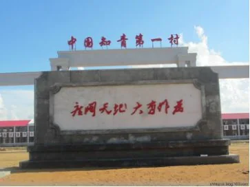

到这里看什么
入口旧照里的门楼标着“中国知青第一村”，照壁题字是“广阔天地 大有作为”。知青食堂、俱乐部、队部等场景取材于农场集体生活。建筑与陈设的复原，可和博物馆里的旧照片及历史页的口述资料对照。
当地仍有后续建设安排，场馆开放和接待情况建议出发前查询。了解友谊的开垦与知青史。
知青记忆 · 农垦文化
从入口的照壁和题字，可以看到友谊如何把农场里的知青经历留在县城的公共记忆中。

入口旧照里的门楼标着“中国知青第一村”，照壁题字是“广阔天地 大有作为”。知青食堂、俱乐部、队部等场景取材于农场集体生活。建筑与陈设的复原，可和博物馆里的旧照片及历史页的口述资料对照。
当地仍有后续建设安排，场馆开放和接待情况建议出发前查询。了解友谊的开垦与知青史。